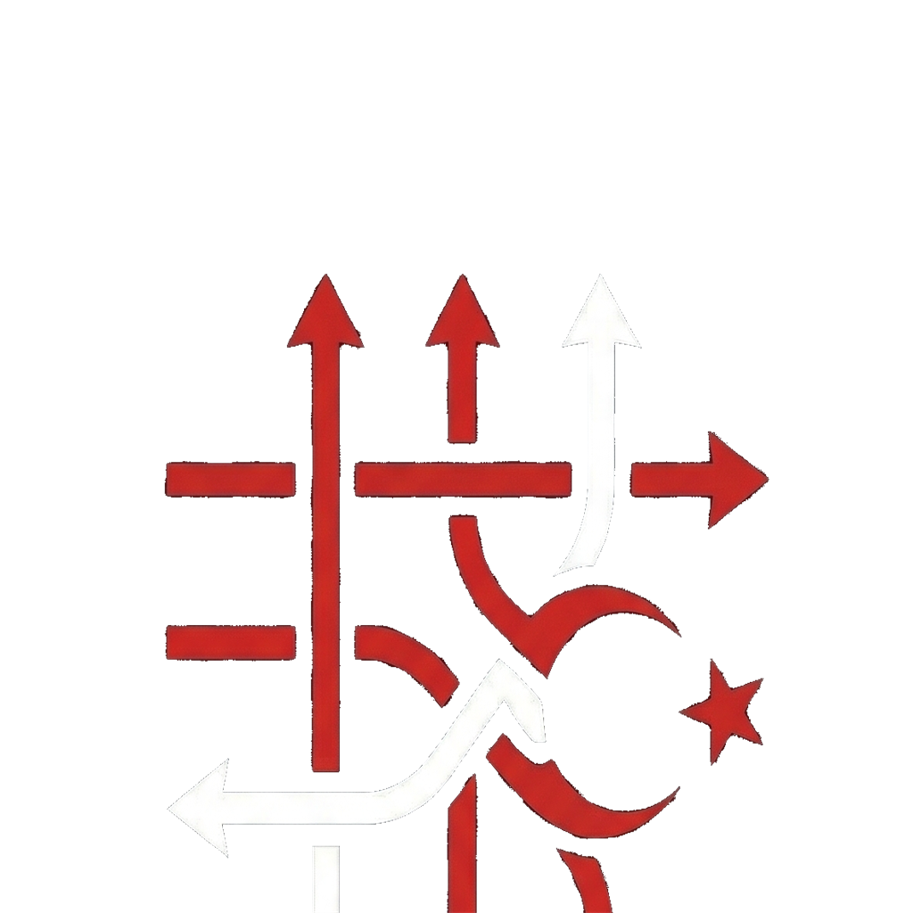

GTFS City
Transit veri analiz ve görselleştirme paneli
🗺️
--
Toplam Hat
🚌
--
Bugünkü Seferler
📍
--
Aktif Duraklar
📂 GTFS ZIP YÜKLE
🗺️ HARİTAYI AÇ
🔗 LİNKTEN YÜKLE
Yalnızca HTTPS GTFS ZIP linkleri kabul edilir. Dış bağlantının güvenliği kullanıcı sorumluluğundadır.
Örnek veriyle dene
Konya, İzmir ESHOT ve Bordeaux açık veri GTFS kaynaklarıyla hızlı başlangıç yap.
🇹🇷
Konya
GTFS
Konya Büyükşehir Belediyesi
Örneği Yükle
Kaynağa Git
🇹🇷
İzmir ESHOT
GTFS
İzmir Büyükşehir Belediyesi
Örneği Yükle
Kaynağa Git
🇫🇷
Bordeaux
GTFS
Bordeaux Métropole
Örneği Yükle
Kaynağa Git
Veriler Hazırlanıyor...
0%
🏠
GTFS City
Transit veri analiz paneli
--
FPS
06:00
🌙 GECE
SABAH PİK
AKŞAM PİK
◀◀
⏸
▶▶
↺
▶ 24H
Hız:
60×
0
aktif araç
06:00
Döngü
■ Durdur
KATMANLAR
Araç Animasyonu
Güzergâh Hatları
Durak Yoğunluğu 3D
Duraklar
Durak 300 m
Yoğunluk Heatmap
Araç İzleri (Fade)
Headway Çizgileri
Bunching Alarmı
Bekleme Süresi 3D
İzokron Analiz 🗺️
HAT TİPİ
Tümü
Metro
Otobüs
Tramvay
Feribot
Funicular
Minibüs
Dolmuş
HARİTA GÖRÜNÜMÜ
OTO
UYDU
KOYU
AÇIK
ŞEHİR
▾
Çalışma Takvimi
⚠️ UYARLANDI
📂 GTFS ZIP Yükle
HATLAR
▾
DURAKLAR
▾
📍 Takip Modu
✕
◀
🚌
—
—
✕
0
km/h
—
Headway
0%
İlerleme
Sonraki Durak
—
⏱ Tahmini Varış
—
📍
—
—
✕
🧭 Nasıl Giderim
🧭 Nasıl Giderim
✕
Yol Tarifi Oluştur →
Rota Sonucu
✕
HEATMAP SAATİ
08:00
Simle takip et
⚠️ Bunching Uyarıları
0
Eşik:
200m
⏱ En Uzun Bekleme
İlk 10 Durak
🎬 Sinematik
📂 GTFS ZIP Yükle
✕
📦
GTFS .zip dosyasını buraya sürükle
veya tıkla seç
Hazırlanıyor...
Beklenen GTFS Dosyaları
stops.txt
routes.txt
trips.txt
stop_times.txt
shapes.txt
calendar.txt
Simülasyon Python pipeline ile preprocess gerektirir. Bu araç validasyon + istatistik sağlar.
Yükleniyor...
—
—
✕
—
⚠️
Veri Uyarıları
X
İZOKRON ANALİZ
✕
Haritada bir noktaya tıklayın
0 – 15 dakika
15 – 30 dakika
30 – 45 dakika
45 – 60 dakika